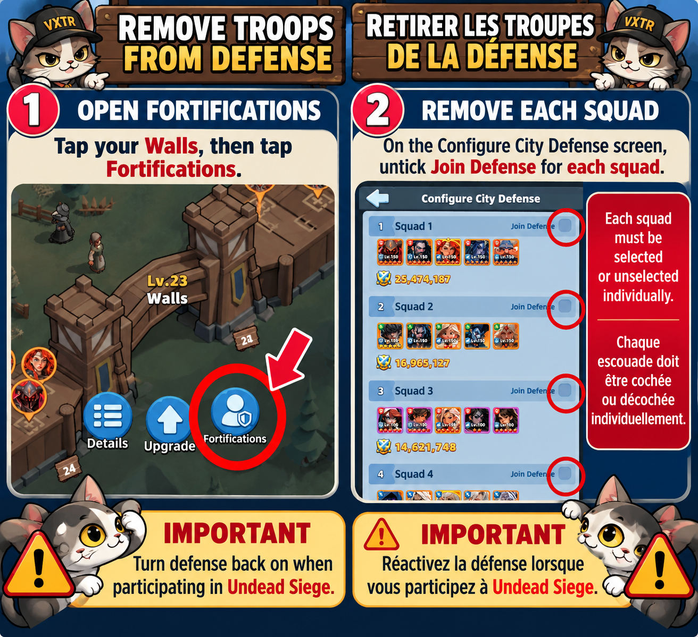

10. Combat Basics
Wall defense
Normally, do not leave troops on your wall/defense unless you are intentionally defending or an event requires it. The major example is Undead Siege, where you set your strongest squad through Walls → Fortifications.
How to Remove Troops from Defense
Open Walls, select Fortifications, and turn off Join Defense for each squad individually. Check every squad: changing one does not change the others.

For Undead Siege, turn defense back on before the event.
Weekend-war shields
You do not need to stay shielded during normal everyday play. Shields are primarily important during weekend wars. If you are not actively fighting, shield before logging off.
Wounded, killed & hospital capacity
Combat can produce wounded troops that can be healed, while some circumstances can result in permanent troop losses. Keep an eye on hospital capacity and do not let wounded troops pile up unnecessarily.
Batch healing
Heal smaller groups instead of one enormous timer. Alliance assists can repeatedly reduce those smaller timers, which often gets your troops back much faster.
Reinforcing
Sanctuary → Reinforcement → Garrison is used to reinforce another player. It is not your own wall-defense menu.
Know when to stop
Scout when possible and remember that a target can be stronger than it appears or may receive reinforcements. If repeated attacks show that you cannot win the matchup, do not keep throwing squads into it just because you already started.
10. Bases du combat
Mur: normalement, ne laissez pas de troupes en défense sauf si vous défendez volontairement ou qu'un événement l'exige. Le Siège des Morts-Vivants est l'exception principale.
Comment retirer les troupes de la défense
Ouvrez les Murs, sélectionnez Fortifications, puis désactivez Rejoindre la défense pour chaque escouade individuellement. Vérifiez-les toutes : modifier une escouade ne modifie pas les autres.
Pour le Siège des Morts-Vivants, réactivez la défense avant l’événement.
Boucliers: pas besoin d'être constamment sous bouclier. Ils sont surtout importants pendant les guerres du week-end. Si vous ne combattez pas, activez le bouclier avant de vous déconnecter.
Soins par petits lots: soignez des groupes plus petits pour que les aides d'alliance puissent réduire plusieurs fois les minuteries.
Renforcement: Sanctuaire → Renforcement → Garnison sert à renforcer un autre joueur.
Surveillez la capacité de l'hôpital, scoutez si possible et n'envoyez pas sans cesse vos escouades dans un combat que vous avez clairement démontré ne pas pouvoir gagner.